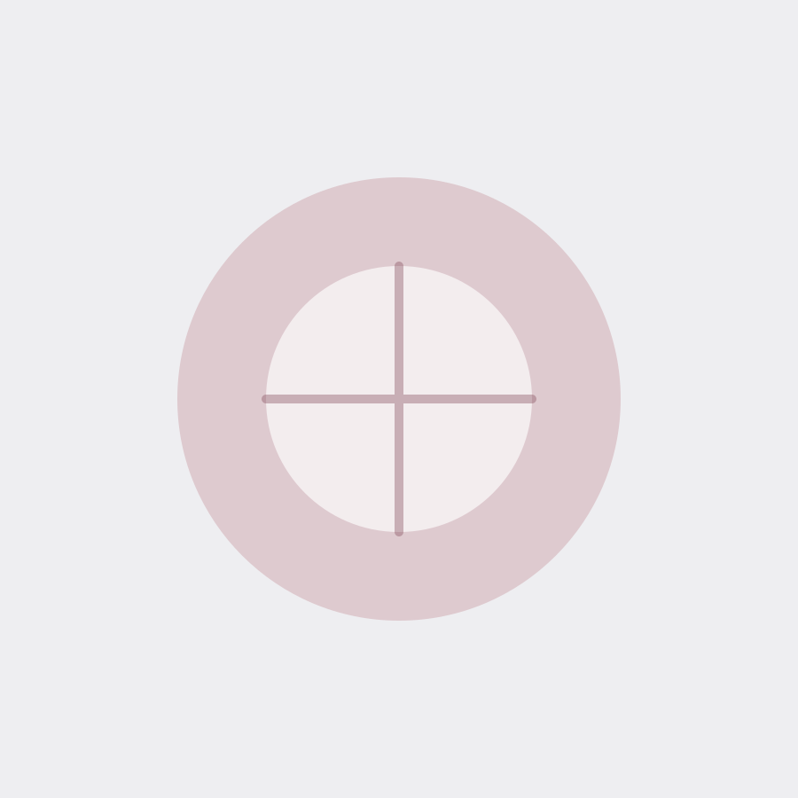

Είσαι μοναδική. Το ίδιο και οι ανάγκες σου.
Μαιευτήρες — Γυναικολόγοι,
εξειδικευμένη & εξατομικευμένη φροντίδα

Γνωρίστε τον ιατρό
Δρ. Βασίλης Θεοδουλίδης
Μαιευτήρας — Γυναικολόγος · Γυναικολόγος Ογκολόγος
Μαιευτήρας — Γυναικολόγος με εξειδίκευση στη Γυναικολογική Ογκολογία, την ενδοσκοπική χειρουργική και την κολποσκόπηση. Επιμελητής Β΄ στην Α΄ Μαιευτική — Γυναικολογική Κλινική Α.Π.Θ. (Γ.Ν. «Παπαγεωργίου»).
Γνωρίστε τον ιατρό
Δρ. Ιάκωβος Θεοδουλίδης
Μαιευτήρας — Γυναικολόγος · Ουρογυναικολόγος
Μαιευτήρας — Γυναικολόγος με εξειδίκευση στην Ουρογυναικολογία και τις παθήσεις του πυελικού εδάφους, καθώς και στην ενδοσκοπική και αισθητική γυναικολογία. Επιμελητής Β΄ στην Α΄ Μαιευτική — Γυναικολογική Κλινική Α.Π.Θ.
Εξειδικευμένη Φροντίδα
Ολοκληρωμένη γυναικολογική & μαιευτική κάλυψη
Οι Δρ. Βασίλης και Δρ. Ιάκωβος Θεοδουλίδης διαθέτουν ακαδημαϊκή κατάρτιση και διεθνείς εξειδικεύσεις στη Γυναικολογική Ογκολογία, την Ουρογυναικολογία και την ενδοσκοπική χειρουργική, δίπλα σε κάθε γυναίκα σε όλα τα στάδια της ζωής της.